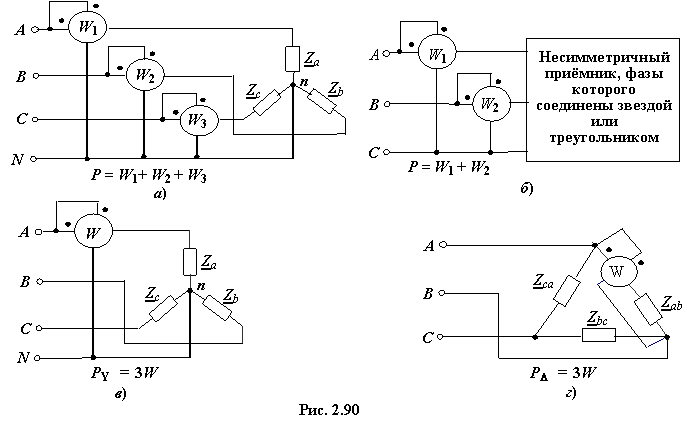
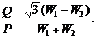

Активную мощность можно измерить при помощи одного, двух или трёх ваттметров в зависимости от схемы соединения фаз потребителя электрической энергии и симметрии нагрузки. Рассмотрим соответствующие схемы включения.

Для измерения активной мощности трёхфазного несимметричного приёмника при наличии нейтрального провода необходимо включить три ваттметра (рис. 2.90а). Активная мощность трёхфазного потребителя равна сумме показаний трёх ваттметров.
Если нулевой провод отсутствует, то измерение мощности проводят двумя ваттметрами (рис. 3.90б). Сумма показаний двух ваттметров определяет активную мощность потребителя независимо от того, звездой или треугольником соединены его фазы. В частном случае симметричного трёхфазного приёмника, кроме активной мощности, по показаниям двух ваттметров можно определить также потребляемую приёмником реактивную мощность
Q =
и фазовый угол
φ = arctg
В случае симметричного трёхфазного приёмника, в котором фазы соединены звездой (рис. 2.90в) или треугольником (рис. 2.90г), достаточно измерить мощность одной фазы и результат утроить.